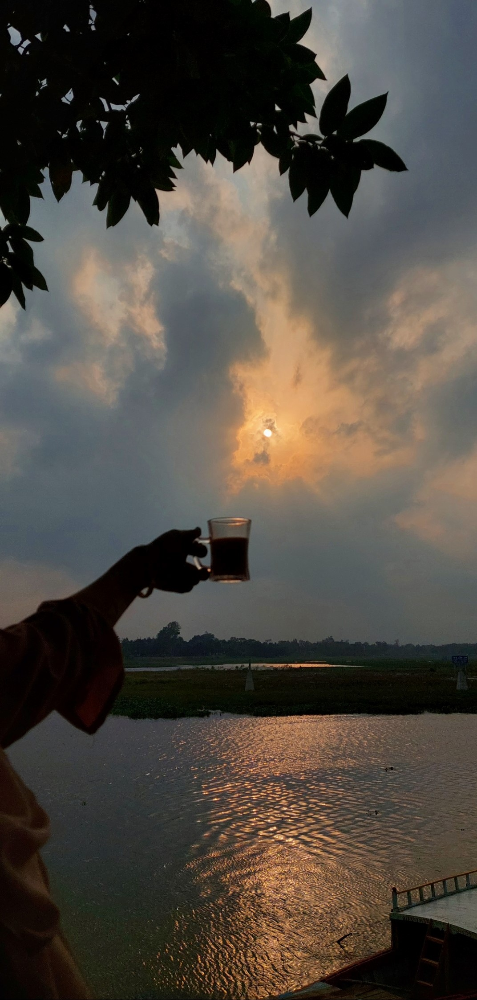

Natural beauty surrounds us in every direction, from the majestic mountains to the serene lakes and lush forests. It's in the gentle sway of tall grasses in the wind and the delicate dance of butterflies among blooming flowers. Nature's beauty lies not only in its grand landscapes but also in the intricate details—a dewdrop clinging to a leaf or the vibrant hues of a sunset sky. In its purest form, natural beauty evokes awe and inspires us to pause, breathe, and marvel at the wonders of the world around us.
Natural beauty is the enchanting melody played by birds at dawn, the soft whisper of leaves rustling in the breeze, and the radiant warmth of sunlight filtering through the canopy of trees. It's the rhythmic crashing of waves upon the shore and the gentle caress of sand beneath our feet. From the graceful flight of a butterfly to the majestic sight of a waterfall cascading down rugged cliffs, nature's beauty is a symphony of sights, sounds, and sensations that awaken our senses and stir our souls.
External Link